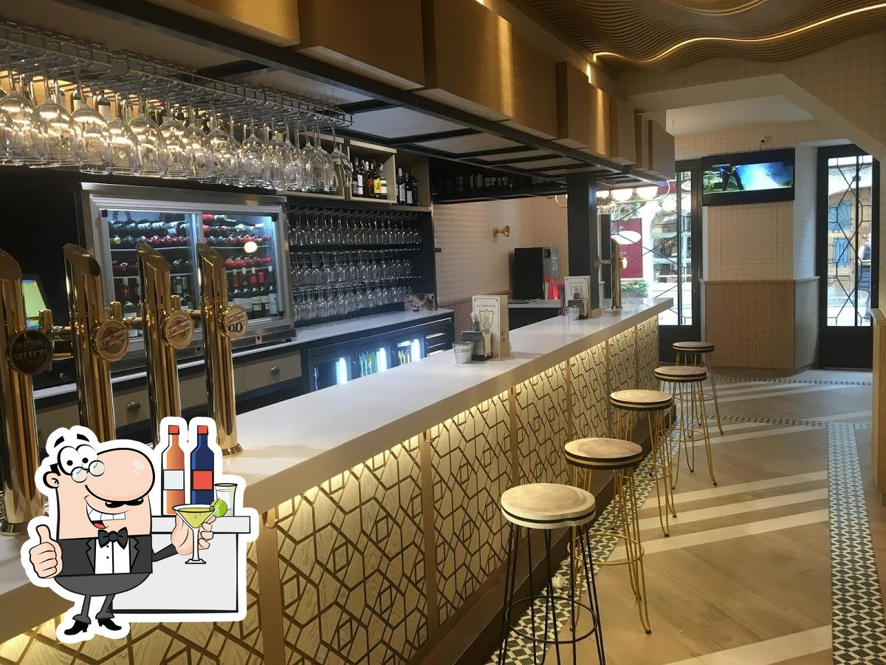
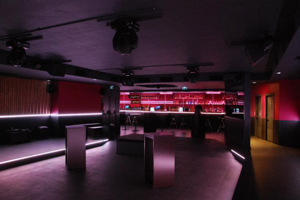

Parada destacada: Burgos

El camino francés es el más popular de los caminos de Santiago. Es el que más peregrinos recibe cada año. Es el camino más corto y el más fácil de recorrer. Es el camino que más gente recomienda para hacer el Camino de Santiago.
Este centrico restaurante en la zona vieja de Santiago te embaucara con su localizacion y sus sabores

No te vayas de Burgos sin probar las maravillas de este tradicional restaurante
Prueba las mejores delicias de la cocina vasca en la primera parada del camino frances

En esta discoteca-pub te lo pasaras en grande con musica actual

Si los sitios de jovenes no es tu ambiente, esta discoteca de mediana edad sera tu espacio de disfrute
¿Buscas algo intermedio entre discoteca y pub? Cooper Club será tu sitio.